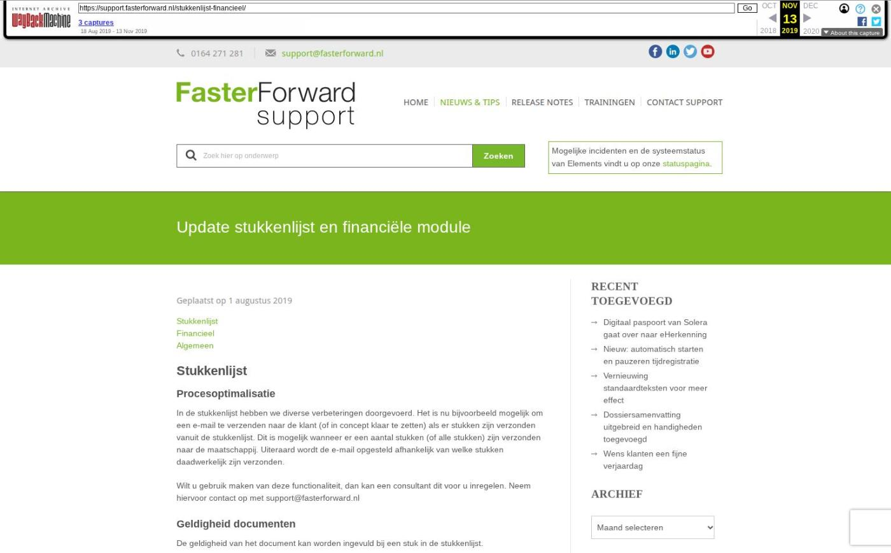

Extra partijen toevoegen in dossier, verbeteringen verzekeringen en meer

Tekstinhoud
Op woensdag 3 januari zijn Elements en eBlinqx weer verbeterd en uitgebreid met nieuwe features. Deze release bevat onder andere optimalisaties voor het klantdossier en verbeteringen ADN.
Advieskantoren
Extra partijen in dossier toevoegen
Stukkenlijst wordt verwijderd bij archiveren product
Verbeteringen Uwkluis
Aanpassingen formulieren Finly
Woningwaarde rapport gratis op te halen
Verzekeringen
Productkaart bij eerste ADN verwerking bijgewerkt
Niet ontvangen ADN posten afvinken
Toeslag als termijnbedrag zichtbaar in berekening premie
Nieuwe dekkingen volgens SIVI up-to-date
Overige verbeteringen
Advieskantoren
Extra partijen in dossier toevoegen
Je kunt nu heel gemakkelijk zelf extra partijen toevoegen aan het dossier. Zo wordt in één oogopslag duidelijk wie bijvoorbeeld de ouder, de bewindvoerder of ex-partner is. Het aanmaken en beheren van deze partijen doe je geheel zelf in de module 'Overige partijen beheren'. Op deze manier kan jij zelf bepalen welke overige partijen jij wilt toevoegen aan jouw omgeving. In de module kan je aangeven of de overige partijen getoond moeten worden op de startpagina van een dossier en/of je deze moet kunnen selecteren in het product. Zo kan je in een product een overige partij aanmerken als bijvoorbeeld aanvrager, premiebetaler of verzekeringnemer. Daarnaast kan je vanuit het dossier communicatie richten aan en versturen naar deze overige partij. De huidige rollen 'eerste aanvrager, partner en kind' blijven bestaan om zo alle bestaande functionaliteiten door te laten lopen. Hier lees je hoe het precies in zijn werk gaat.
Wil je gebruik maken van de module 'Overige partijen beheren' stuur dan een e-mail naar support@fasterforward.nl. Let op: alleen beheerders kunnen doorgeven wie toegang moet krijgen tot deze module.
Stukkenlijst wordt verwijderd bij archiveren product
Een stukkenlijst wordt nu automatisch verwijderd bij het archiveren van een product. Een product kan (automatisch) gearchiveerd worden wanneer de aanvraag is vervallen of beëindigd. In deze situaties is de stukkenlijst niet meer benodigd, aangezien je voor deze aanvraag geen stukken meer hoeft te versturen. Door de stukkenlijst automatisch te verwijderen bij het archiveren voorkom je dat er onnodig stukkenlijsten in het dossier blijven staan. De documenten gekoppeld aan het stuk staan onder het tabblad Documenten, waardoor deze altijd terug te vinden zijn. Mocht het hypotheekproduct onterecht op beëindigd en gearchiveerd komen te staan dan kan de maatschappij een nieuw documentaanvraagbericht (DA) versturen om zo de stukkenlijst te herstellen.
Verbeteringen Uwkluis
Brondata Ockto als aparte PDF bestanden
Via Uwkluis is het mogelijk om met Ockto brondata op te halen bij verschillende instanties. Deze informatie komt nu in diverse PDF bestanden onder het klantdossier te staan. Zo heb je een apart document van bijvoorbeeld UWV en UPO. Voorheen kwam al deze informatie in één PDF bestand in Elements te staan. Nu hoef je niet meer zelf dit ene document te bewerken, maar kan je direct de PDF bestanden aan het juiste stuk koppelen.
Aanpassingen formulieren Finly
Nieuw formulier beschikbaar
Via Elements kan je gemakkelijk formulieren opvragen bij Finly. Aan de beschikbare formulieren is vanaf nu het formulier 'Particuliere check-up' toegevoegd. Wil je hiervan gebruik maken? Dan moet deze toegevoegd worden aan de workflow. Stuur hiervoor een e-mail naar support@fasterforward.nl
Naamswijziging bestaande formulieren
De formulieren 'Schademelden' en 'Risicomanagement' zijn al beschikbaar. Deze hebben alleen een andere naam gekregen, namelijk 'Schademelden inboedel' en 'Risico inventarisatie zakelijk'.
Bijlagen in Elements en eBlinqx
Bij sommige formulieren kan de klant extra bijlagen toevoegen. Deze bijlagen komen ook in Elements en eBlinqx te staan onder het tabblad Documenten. Deze documenten hebben als protocol Finly en als soort document 'bijlage Finly formulier'. Zo is het duidelijk dat deze bijlagen/documenten horen bij een formulier wat door de klant is ingevuld.
Maak je nog geen gebruik van de koppeling met Finly? Neem dan eerst contact op met Finly (marnix.ravestein@finly.nl) om een overeenkomst af te sluiten. Zij sturen de betreffende gegevens naar ons op om het verder voor je in te richten.
Woningwaarde rapport gratis op te halen
Wanneer jij gebruikt maakt van PortefeuilleSignalen kan je vanaf nu gratis het woningwaarde rapport van een dossier ophalen. Dit kan je doen door middel van de knop 'Woningwaarde' onder het tabblad Berekeningen. Voorheen moest je hiervoor betalen. Als je geen gebruik maakt van PortefeuilleSignalen en je wilt toch een woningwaarde rapport ophalen dan kan je bij Hypotheekbond een demo-login aanvragen. Zonder een account is het niet meer mogelijk om het woningwaarde rapport bij hen op te vragen.
Verzekeringen
Productkaart bij eerste ADN verwerking bijgewerkt
Wanneer je werkt met mutatievoorstellen wordt nu ook de productkaart bijgewerkt aan de hand van het eerste AFD bericht wat voor dit product wordt verwerkt. Zo is de productkaart up-to-date en gevuld met de juiste gegevens. Voorheen (bij mutatievoorstellen) werd de productkaart alleen bijgewerkt bij een mutatie en wanneer de ADN verwerking een prolongatie op hoofdvervaldatum betrof. Hierdoor kon het voorkomen dat de productkaart lang leeg bleef ondanks het verwerken van het ADN bericht. Nu zal dit minder vaak voorkomen, doordat de productkaart ook aangepast wordt bij de verwerking van het eerste AFD bericht (ADN of Aplaza) naast het bijwerken bij prolongatie op hoofdvervaldatum en een mutatie.
Niet ontvangen ADN posten afvinken
Vanaf nu is het mogelijk om in de ADN module onder het tabblad 'Niet ontvangen' regels af te vinken. Onder dit tabblad staan de polissen waarvan je via ADN in een bepaalde maand geen provisie hebt ontvangen, terwijl Elements en eBlinqx dit wel verwacht. Je controleert deze polissen en bijbehorende productkaart. Met het afvinken geef je aan dat je geen prolongatie meer hoeft te ontvangen en/of je de productkaart hebt aangepast. De afgevinkte posten zullen uit de lijst verdwijnen, nadat je hebt geklikt op 'Markeer geselecteerde posten als gecontroleerd'. Op deze manier kan je het tabblad 'Niet ontvangen' actief bijwerken.
Toeslag als termijnbedrag zichtbaar in berekening premie
In de polis wordt uiteengezet hoe het totale premiebedrag is opgebouwd. Vanaf nu staat in deze opbouw ook het termijnbedrag toeslag. Deze toeslag werd al wel meegenomen in de berekening, maar was voorheen niet zichtbaar in deze opbouw. Ook is het termijnbedrag toeslag op te halen door middel van een tag en wordt deze getoond in de dossiersamenvatting.
Nieuwe dekkingen volgens SIVI up-to-date
Als via ADN en Aplaza berichten binnenkomen, worden de nieuwste, bijbehorende dekkingen en/of soorten documenten aangemaakt. Deze zijn namelijk uitgebreid volgens de SIVI richtlijnen van april. Hiermee zijn alle te selecteren verzekeringen up-to-date om correct te verwerken in een klantdossier.
Nieuwe dekkingen
Glas in afscheidingen
Werkmaterieel aansprakelijkheid
Werkmaterieel aansprakelijkheid uitgebreid
Bedrijfsschade cyber (stagnatie eigen bedrijf)
Bedrijfsschade cyber (stagnatie bij derden)
Machinebreuk met brandschade
Extra kosten brand en storm
Extra kosten brand en inbraak
Extra kosten uitgebreid
Extra kosten brand/storm/lucht-/ruimtevaartuigen
Extra kosten alle gevaren
Extra kosten extra uitgebreid
Bijzondere kosten opstal en inboedel
Rechtsbijstand pand en personeel
Schadeverzekering bestuurders
Opstal brand, storm en inbraak
Garage
Handelsvoorraad
Handelsvoorraad uitgebreid
Lijfsieraden verlies
Lijfsieraden schade
Liefsieraden diefstal
Werkgeversaansprakelijkheid werkmaterieel
Rechtsbijstand bedrijf, verkeer en juridisch
Overige verbeteringen
In het mutatievoorstel werd soms onterecht aangegeven dat het verzekerd object en/of de premieopbouw is aangepast. Deze check hebben we verbeterd, waardoor deze melding er alleen komt te staan als het verzekerd object of premieopbouw daadwerkelijk is gewijzigd
In de leningdelen van de hypotheekkaart wordt het doel vermeld. Dit doel wordt vanaf nu overgenomen vanuit het HDN bericht. De doelen kunnen zijn Box 1, Box 3 of Box 1/Box 3. Zo wordt het veld eenduidig gevuld en staat hier de correcte waarde
Het is niet meer mogelijk om een DA-bericht te verzenden (serviceprovider) wanneer er voor dat dossier nog DA berichten in de HDN inbox staan om te verwerken. Er verschijnt dan een melding. Als alle DA berichten zijn verwerkt, kan je een nieuw DA bericht versturen. Op deze manier stuur je altijd de meest actuele status mee naar intermediair
In een boekstuk kan je met de beschikbare knoppen naar het vorige of volgende boekstuk gaan. Deze knoppen kijken nu alleen naar de boekstukken binnen hetzelfde boekjaar. Dit geldt ook voor de saldoaansluiting tussen de boekstukken. Dit verbetert de snelheid van Elements en eBlinqx
Het prolongatiesoverzicht 'Overzicht prolongaties' is niet meer te raadplegen. Dit is een ouder overzicht wat niet meer onderhouden wordt. De informatie is op te halen via andere beschikbare overzichten
Wanneer je een adres opvoert, kan je het type van het onderpand selecteren. Aan dit type is 'Bedrijfsonroerendgoed' toegevoegd
Er zijn diverse banken uit Curaçao toegevoegd, zodat deze gebruikt kunnen worden in de boekhouding
In de rapportage CRM – dossiers met organisaties wordt nu het standaard correspondentieadres opgehaald in plaats van het eerst opgevoerde adres onder de organisatie
Geplaatst op 28 december 2023 (Laatste update: 02 januari 2024)
Laatste 5 releasenotes
Verbeteringen onder de motorkap en gespreksopnames »
HDN release: afscheid van HDN certificaten »
Verbeterde verwerking van grote e-mailvolumes via Office 365 en voorbereiding HDN »
Nu zelf schade- en levensverzekeringen omnummeren »
Verbeteringen onder de motorkap en type documenten gecontroleerd »